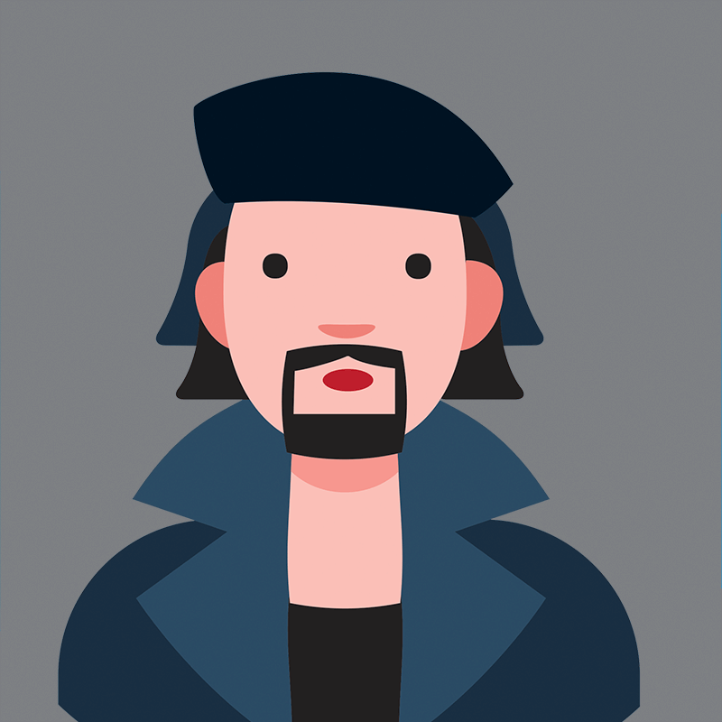
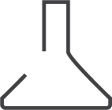

Types
Headers may be oriented to give the hierarchy of a section in the context of the page:
level renders <h1> ... <h6>.
Page headings are sized from --ui-font-size by level and are not affected by
surrounding content size.
First header
Second header
Third header
Fourth header
Fifth header
Headers may be oriented to give the importance of a section in the context of the content that
surrounds it:
size.
Content headings are sized with em and are based on the font-size of their
container.
Huge Header
Large Header
Medium Header
Small Header
Tiny Header
A sized page header
A mini page header
Account Settings
Manage your account settings and set e-mail preferences.
Friends
Price
$10.99
Molly
Coordinator
Elyse
Developer
Eve
Project Manager
Content
Learn More

Patrick

Plug-ins
Check out our plug-in marketplace
Uptime Guarantee
Account Settings
Manage your preferences
Account Settings
Manage your account settings and set e-mail preferences.
H1
Sub Header
H2
Sub Header
H3
Sub Header
H4
Sub Header
H5
Sub Header
States
Disabled Header
Variations
Dividing Header
Block Header
Top Attached
Attached
Bottom Attached
Seamless Top Attached
This variant is not available for the bottom header, which doesn't have the attached border. To get
a seamless bottom header, make the previous attached element seamless.
Seamless Bottom Attached
Go Forward
Go Back
Right
Left
This should take up the full width even if only one line
Center
Primary
Secondary
Red
Orange
Yellow
Olive
Green
Teal
Blue
Purple
Violet
Pink
Brown
Grey
A header can have its colors inverted for contrast.
Inverted headers use light versions of the site's colours, adapted to have more contrast on a dark
background.
Red
Orange
Yellow
Olive
Green
Teal
Blue
Purple
Violet
Pink
Brown
Grey
Fitted block header
Block header
Link header
Parts
The other content parts style themselves by their OWNER: the same <ui-meta> reads
differently in a card, an item, a feed and a comment. Outside any owner they are unstyled blocks.
Their own pages (card, items, comment, feed, statistic, step, label) show every owner in
full.
Elliot Fu
Friend
Elliot is a film-maker from New York.
A second content block, divided from the first.
Centered
A center aligned content block.
Matthew
Arrowhead Valley Camp
Summer camp
Rachel
Kristy
Joined in 2013
Cute Dog
DescriptionStevie
Elliot Fu added you as a friend
4 Likes
Matt
Today at 5:42PM
Elliot
Elliot is a sound engineer living in Nashville who enjoys playing guitar.
Elliot Fu
This has been very useful for my research. Thanks as well!
Elliot
16 Friends
Helen Troy added 2 photos
Ours is a life of constant reruns. We're always circling back to where we'd we
started.
Joe Henderson
Dude, this is awesome. Thanks so much
ReplySaveHide
Matt
Today at 5:42PM
How artistic!
Elliot Fu added you as a friend
3 days ago
You added Jenny Hess to your coworker group.
Jenny Hess added you as a friend
4 hours ago
Shipping
Choose your shipping options
40,509
Views
5
Flights
Three Thousand
Signups
Dogs214
VeronikaFriend